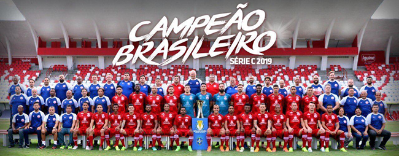

Le Clube Náutico de Recife est un club brésilien de football fondé le 7 avril 1901. Son nom signifie "Club nautique du Capibaribe", du nom du fleuve qui traverse la ville de Recife. Le club est surnommé "Timbu", qui est le nom local de l'opossum, son animal emblématique. Le club évolue actuellement en Série C, la troisième division du championnat brésilien, ainsi qu'en Campeonato Pernambucano, le championnat de l'État du Pernambouc. Le club a remporté six fois le titre de champion de l'État du Pernambouc, de 1963 à 1968, ce qui est un record. Le club a également participé à la Copa Libertadores en 1968 et en 1989.
Le stade du club est le Estádio Eládio de Barros Carvalho, plus connu sous le nom de Estádio dos Aflitos, inauguré le 25 juin 1939. Il s'agit du premier stade de l'État du Pernambouc, avec une capacité de 19 800 spectateurs. Le stade est situé dans le quartier de Nossa Senhora dos Aflitos, d'où il tire son surnom. Le stade porte le nom d'Eládio de Barros Carvalho, qui a été quatorze fois président du club. Le premier match joué dans ce stade a été une victoire du Náutico sur le Sport Recife par 5 à 2, le 25 juin 1939. Le premier but a été marqué par Wilson, joueur du Náutico. Le record d'affluence a été établi le 21 juillet 1968, lors d'un match entre le Náutico et le Sport Recife, avec 31 061 spectateurs.
L'équipe actuelle du Náutico est composée de joueurs talentueux et motivés, qui portent fièrement les couleurs rouge et blanche du club. L'entraîneur du club est Dado Cavalcanti, qui a pris ses fonctions en janvier 2023. Parmi les joueurs les plus en vue, on peut citer le gardien de but Jefferson, le défenseur central Camutanga, le milieu de terrain Jean Carlos, le capitaine et attaquant Kieza, et le jeune prodige Vinícius, qui a été élu meilleur joueur du Campeonato Pernambucano 2022. L'équipe a pour objectif de remporter le titre de la Série C et de retrouver la Série B, qu'elle a quittée en 2022 après une relégation.